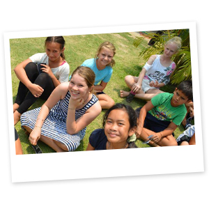
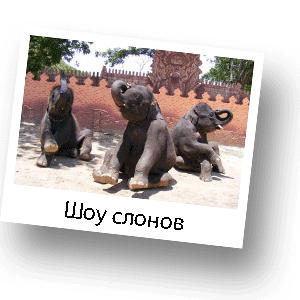

Учим английский

Летний языковой лагерь для детей от 2 до 11 лет в Хуахине (Тайланд)
В Хуа Хине несколько интернациональных школ с очень хорошим уровнем английского языка. В которых английский преподают носители языка. Преподаватели в этих школах приглашенные из Англии, Америки, Австралии, Канады. Также эти школы организуют летний лагерь, с возможностью присоедениться в любое удобное время, от 1 до 5 недель. Это прекрасная возможность весело провести время и снять языковой барьер. Английский язык с носителями языка на открытом воздухе. С 11 июля - 18 августа 2017... читать далее
Куда пойти с детьми в Хуа Хине

Хуа Хин сафари
Прекрасное место, где будет интересно не только детям, но и взрослым. Это прекрасная возможность весело провести время и развлечься всей семьей. Там Вы можете покататься на слонах, покрмить этих величественных животных. Увидеть необыкновенные шоу-программы, в которых принимают участие змеи, крокодилы, слоны. Вы сможете воочию увидеть, насколько удивительные трюки может исполнить, казалось бы, огромный и неповортливый слон. Например, слоны играют в футбол, делают массаж и даже, рисуют на Ваших глазах. Также захватывающее впечатление производит шоу крокодилов и змей. Удивительно насколько ловко дрессировщики обращаются с этими опасными и ядовитыми рептилиями и пресмыкающимися. Ну и, конечно, на память у Вас останутся фотографии.
Зоопарк
Вокруг Хуа Хина открылось много мини-зоопарков. И все они по своему прекрасны.
Hua Hin Zoo совсем новый зоопарк.
Примерно 10 км на северо-запад от города государственный центр разведения диких животных (Huai Sai Wildlifde Breeding Center). Вход свободный. Очень интересное место, где обязательно понравится Вашему ребенку. Зоопарк не очень большой, но там Вы сможете увидеть много животных. У Вас будет прекрасная возможность покормить зверей, но корм надо обязательно приность с собой т.к. купить его на месте возможности нет. Лучше всего принести с собой бананы.По территории зоопрака свобоно разгуливают олени и павлины. В клетках Вы найдете дикобразов, лемуров, обезьян, медведей и множетсво видов птиц. В зоопарке обычно совсем не многолюдно, что делает это место очень привлекательным для посещения с детьми.
Camel Republic зоопарк с атракционами. Билет примерно 150 бат. camel-republic.com
1000 sook farm (в переводе с тайского “много счастья”) контактный зоопарк для самых маленьких. Здесь можно покормить овец, коз, кроликов, пони. На пони можно покататься. Здесь же прекрасный большой магазин тайских сладостей, которые можно попробовать перед тем как покупать.
Swiss Sheep Farm еще одно прелестное место, где можно посмотреть и покормить домашний скот. swisssheepfarm.com
Аквапарк
Относительно недавно в Хуа Хине постороили второй аквапарк - Vanna Nava. Он раположен на южной границе города. Аквапарк будет интересен взрослым и детям постарше. В нескольких киллометрах на запад от города расположен аквапарк Black Mountain. Аквапарк не очень большой, но тем не менее там Вы найдете множество водных горок и других водных развлечений. На территории имеется ресторан, а также вдоль бассейнов стоят лежаки, где Вы можете отдохнуть. Black Mountain мы рекомендуем для посищения с маленькими детьми.Но парк также будеть интересен взрослым детям. На территории есть вэйкпарк и надувной город на озере.
Боулинг
В торговом центре Market Village на третьем этаже рядом с кинотеатром есть боулинг. Там можно неплохо провести время с детьми. Боулинг располагает детскими дорожками и дети с удовольствием принимают участие в игре.

Игровой центр в Market Village
На третьем этаже торгового центра Market Village расположен детский игровой центр. Там есть атракционы для детей разного возраста. Также есть игровая зона, где Вы можете оставить ребенка и отправится по своим делам. В большинстве своем дети очень любят это место и всегда с удовольствием там развлекаются.